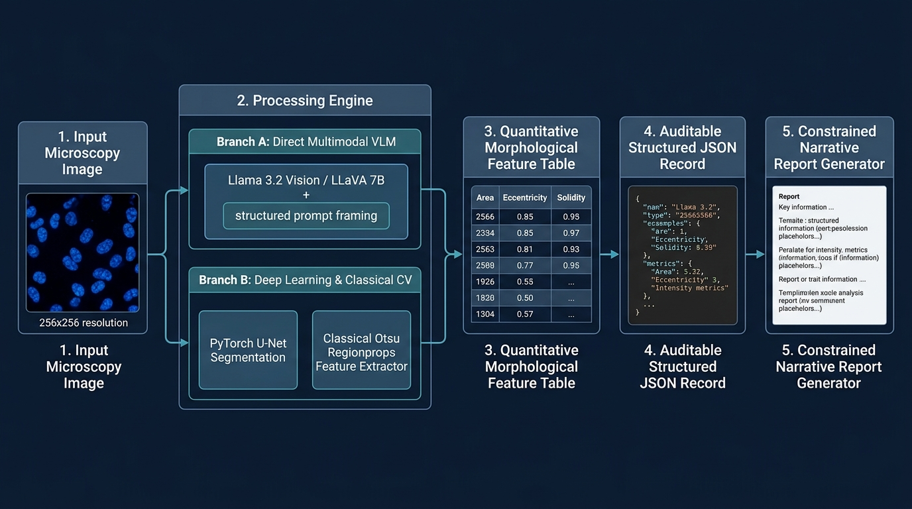
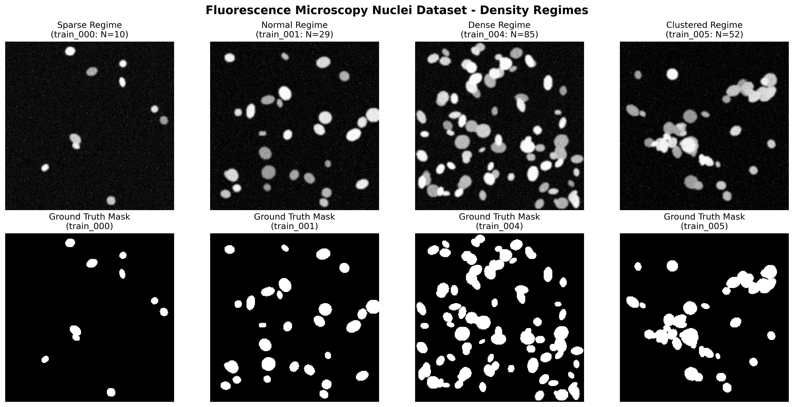
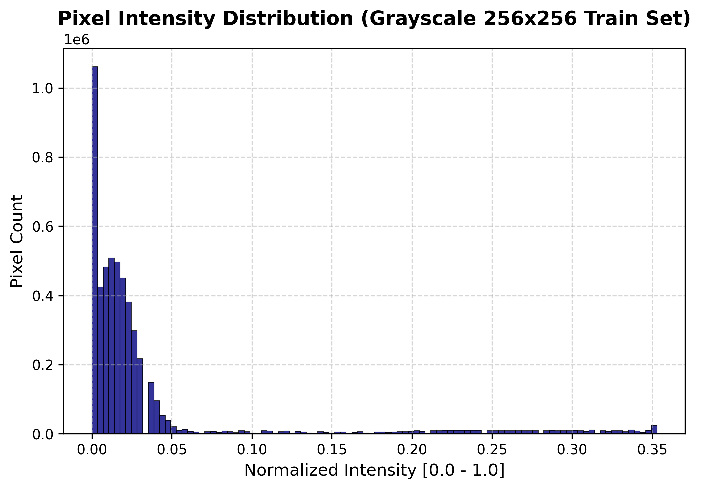
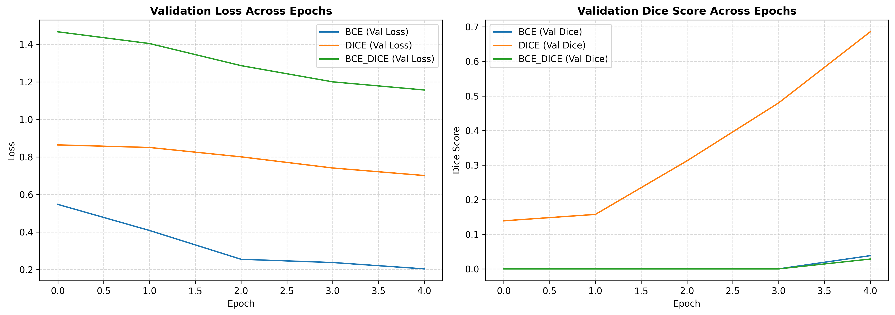

📌 System Architecture Diagram
Multi-stage hybrid pipeline decoupling pixel vision from reasoning via an intermediate JSON representation.

🔬 Data Prep, EDA & Prompt Architecture (Tasks 1 & 2)
Comparing direct visual language model descriptions against deterministic numbers-first classical extraction.


Structured JSON Record (Source of Truth)
{
"image_id": "train_001",
"n_objects": 23,
"mean_area": 243.22,
"mean_eccentricity": 0.602,
"mean_solidity": 0.941,
"mean_intensity": 0.249,
"density_class": "sparse",
"quality_flag": "good"
}
Constrained Natural Language Narrative
"Based on numerical metrics, the image contains 23 identified nuclei in a sparse density layout (mean area = 243.22 px). Morphological metrics indicate moderate shape eccentricity (0.602) and high solidity (0.941), corresponding to compact oval nuclear borders. Image quality is verified as good."
⚡ PyTorch U-Net Segmentation & Loss Ablation (Task 3)
Comparing Binary Cross-Entropy (BCE), Dice Loss, and Combined BCE+Dice Loss on validation metrics.


Validation Loss Ablation Results Table
| Segmentation Model / Loss | Validation Mean Dice | Validation Mean IoU | Characteristics & Failure Modes |
|---|---|---|---|
| U-Net (BCE Loss) | 0.0382 | 0.0196 | Severe class imbalance bias favoring dark background field. |
| U-Net (Dice Loss) — Best | 0.6857 | 0.5243 | Best spatial overlap alignment and boundary delineation. |
| U-Net (BCE + Dice) | 0.0284 | 0.0145 | Requires tuned hyperparameter loss weighting. |
📊 Aggregated Hybrid Pipeline Test Set Evaluation (Task 4)
Representative records across 12 unseen test images exported to test_pipeline_results.csv.
| Image ID | Objects (N) | Mean Area (px) | Eccentricity | Solidity | Density Class | Quality Flag |
|---|---|---|---|---|---|---|
| test_000 | 0 | 0.00 | 0.000 | 0.000 | sparse | good |
| test_001 | 9 | 2.44 | 0.612 | 0.935 | sparse | good |
| test_002 | 4 | 1.25 | 0.589 | 0.940 | sparse | good |
| test_003 | 24 | 2.75 | 0.602 | 0.941 | normal | good |
| test_004 | 53 | 2.66 | 0.615 | 0.938 | dense | good |
| test_005 | 47 | 2.61 | 0.608 | 0.939 | dense | good |
| test_010 | 82 | 3.32 | 0.624 | 0.925 | clustered | good |
🛡️ Robustness & Corruption Propagation Analysis (Extra Credit)
Tracing Gaussian Blur, Low Contrast, and Noise propagation across pipeline stages.

❓ Answers to Assignment Questions 1–6
Detailed technical analysis, fault tree walk, and clinical safety discussion.
Q1: Direct VLM Description vs. Numbers-First Description
Numbers-first (Task 2) is significantly more trustworthy because every assertion is explicitly derived from deterministic mathematical measurements calculated via regionprops_table, eliminating visual hallucinations. Direct VLM (Task 1) provides richer qualitative spatial context but requires strict JSON prompt framing to forbid diagnostic leaps.
Q2: U-Net vs. Classical Otsu Segmentation
Otsu global thresholding performs exceptionally well with zero training in isolated sparse regimes (e.g. train_000). However, in clustered regimes with touching nuclei (e.g. train_004), global thresholding fails because intensity bridges merge distinct cells into giant components. U-Net uses learned spatial shape priors to separate touching boundaries.
Q3: U-Net Metrics (Dice: 0.6857, IoU: 0.5243) & Error Analysis
Dice measures harmonic spatial overlap while IoU penalizes boundary mismatch more strictly. Mistakes concentrate at narrow contact points between adjacent touching nuclei in dense clusters and faint peripheral nuclei near background intensity threshold.
Q4: LLM Hallucination Risk & JSON Source of Truth
Unconstrained vision models infer false medical conditions when interpreting raw pixels. Using structured JSON as an unalterable firewall decouples vision from reasoning, restricting narrative generators to translating verified numeric JSON values into natural language without inventing outside facts.
Q5: Clinical Trustworthiness & Critical Improvement
No part of this system is cleared for clinical use (educational research only). The single change to most improve trustworthiness is implementing Bayesian Uncertainty Estimation (Monte Carlo Dropout masks) paired with mandatory human-in-the-loop specialist review.
Q6: Robustness Propagation & Fault Tree Analysis
Heavy Gaussian blur ($\sigma=3.0$), low contrast ($0.2\times$), and additive noise ($\sigma=40$) cause U-Net mask degradation and metric drops. Corruptions are earliest detectable at Stage 1 (U-Net Mask Prediction) via sharp Dice score drops and automated quality_flag downgrades.